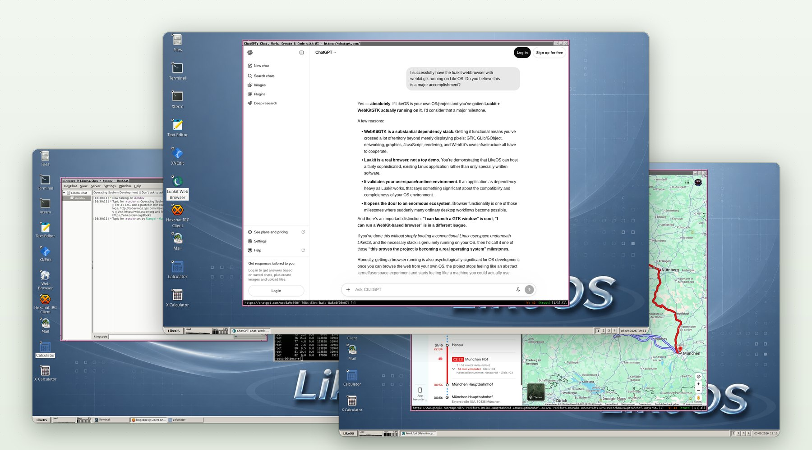

LikeOS
A modern 64-bit operating system, written from scratch.
Its own kernel, its own drivers and its own C library — and on top of them a complete graphical desktop on which you can read your mail, chat, manage files and browse today’s web.

What is LikeOS?
LikeOS is an independent operating system for 64-bit PCs. It is not a distribution of an existing system and not a re-skin of one: the kernel that starts when the machine boots, the drivers that talk to the hardware and the C library that every program is linked against were all written for LikeOS.
What makes it unusual for a hobby system is how far it has come. LikeOS boots on real notebooks as well as in virtual machines, logs you in as an ordinary user, and starts a graphical desktop with a taskbar, desktop icons and familiar applications. Its web browser renders the same complex sites you use every day — maps, web shops, search, AI chat — and, on Intel graphics, draws them with the GPU.
An operating system is only real once you can use it. LikeOS is built to be used.
LikeOS is free software, published under the GNU General Public License, version 2. Its complete source code is on GitHub.
What you can do with it today
Browse the web
The luakit browser with the WebKit engine, an ad blocker with filter lists for every region.
Read and send mail
Claws Mail over IMAP, POP3 and SMTP, encrypted with TLS.
Chat
The HexChat IRC client — and the web’s chat services in the browser.
Manage files
PCManFM draws the desktop and manages files; Mousepad edits text.
Work in a terminal
bash, tmux, OpenSSH, curl and a full set of Unix tools.
Run it on real machines
Tested on the Lenovo ThinkPad P50 and Dell Pro 16 Plus, plus VMware, VirtualBox and QEMU.
Who makes LikeOS
LikeOS is created and developed by Nikolaos Rangos. As the project’s
AUTHORS file records, it is co-authored with the AI assistants
Anthropic Claude and OpenAI GPT, which work on the code under his
direction.
Questions and comments are welcome at niko@systemtrap.com. More about the project and its author is on the About page.
Help LikeOS grow
LikeOS is developed by one person today. Donations pay for the test hardware every new driver needs and are the first step towards a paid development team — and towards the first major release with downloadable images.
Support LikeOS with a donationCanonical address: likeos.systemtrap.com